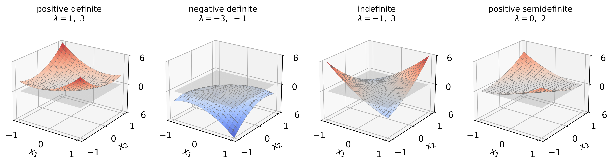
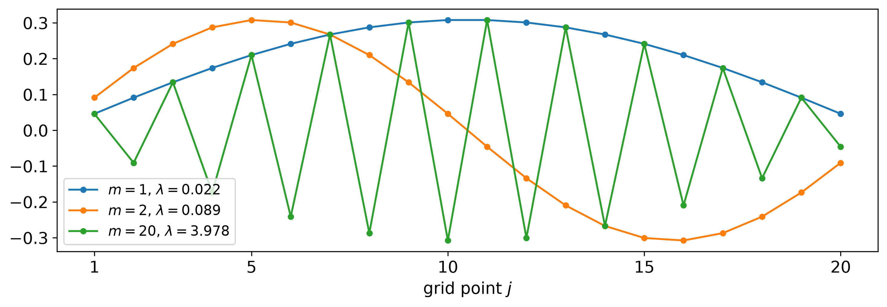
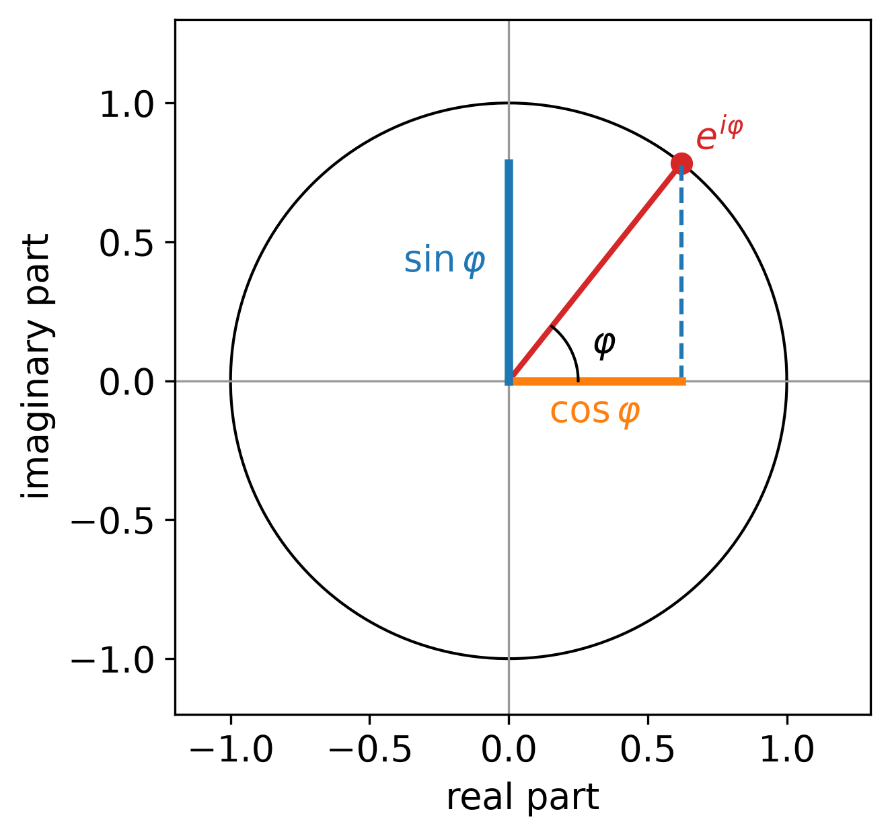
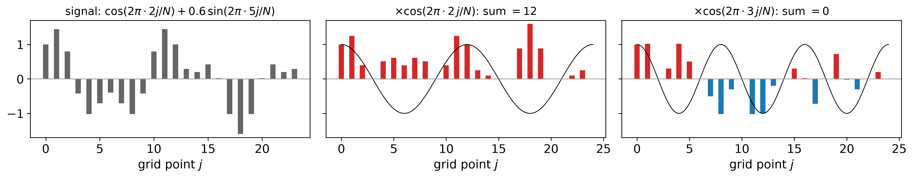
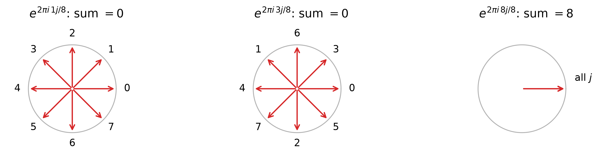
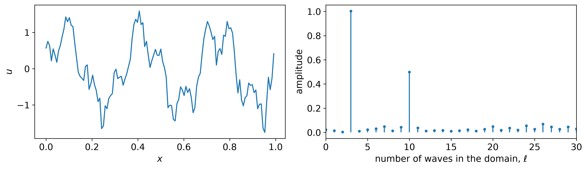
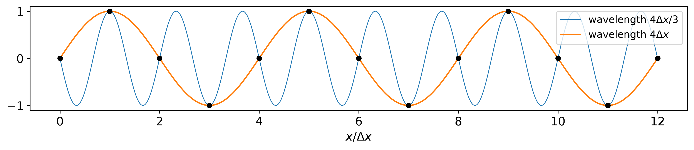
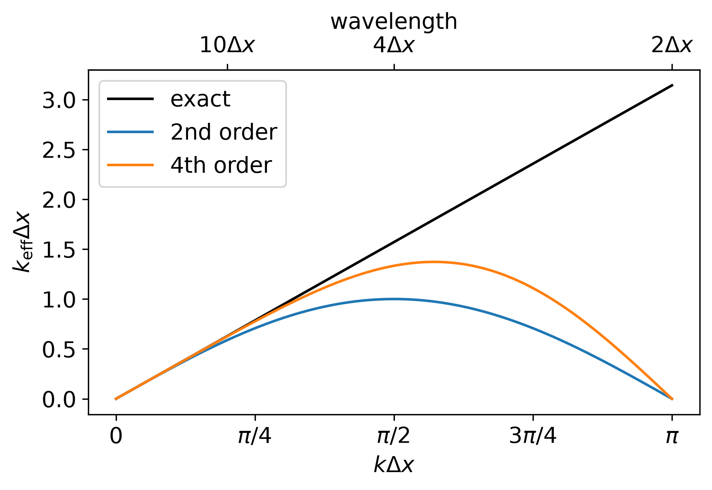

Prognostic Modelling (pea700) · Lecture 4
Two views of one discretization: the matrix acts on all grid points at once; waves show what it does to each scale. The eigenvectors of the matrix are waves.
\[ - \frac{\mathrm{d}^2 u}{\mathrm{d}x^2} = f(x), \qquad u(0) = u(L) = 0 \]
\(N + 1\) intervals, \(h = L / (N + 1)\), \(x_j = j h\); known \(u_0 = u_{N+1} = 0\), unknowns \(u_1, \dots, u_N\). Central difference at each interior point:
\[ \frac{-u_{j-1} + 2 u_j - u_{j+1}}{h^2} = f_j, \qquad j = 1, \dots, N \]
Multiply by \(h^2\); for \(N = 4\), with \(u_0 = u_5 = 0\) in the first and last row:
\[ \begin{pmatrix} 2 & -1 & 0 & 0 \\ -1 & 2 & -1 & 0 \\ 0 & -1 & 2 & -1 \\ 0 & 0 & -1 & 2 \end{pmatrix} \begin{pmatrix} u_1 \\ u_2 \\ u_3 \\ u_4 \end{pmatrix} = h^2 \begin{pmatrix} f_1 \\ f_2 \\ f_3 \\ f_4 \end{pmatrix} \]
\[ A \vec x = \vec b, \qquad \vec x = \begin{pmatrix} u_1 \\ \vdots \\ u_N \end{pmatrix}, \qquad \vec b = h^2 \begin{pmatrix} f_1 \\ \vdots \\ f_N \end{pmatrix}, \qquad A = \begin{pmatrix} 2 & -1 & & & \\ -1 & 2 & -1 & & \\ & \ddots & \ddots & \ddots & \\ & & -1 & 2 & -1 \\ & & & -1 & 2 \end{pmatrix} \]
The \(h^2\) stands on the right hand side, because we multiplied each equation by it.
Think first: how many of the \(N^2\) entries are non-zero?
\(3N - 2\): the matrix is sparse. With \(10^8\) grid points the full matrix would have \(10^{16}\) entries; stored without zeros (scipy.sparse) it has \(3 \cdot 10^8\).
Symmetric, \(A = A^T\): the stencil couples to the left neighbour with the same weight, \(-1\), as to the right.
Definiteness = the sign of the quadratic form \(q(\vec x) = \vec x^T A \vec x = \sum_i \sum_j x_i \, a_{ij} \, x_j\):
| \(q(\vec x)\) for all \(\vec x \ne 0\) | the matrix is |
|---|---|
| \(> 0\) | positive definite |
| \(\ge 0\), and \(= 0\) for some \(\vec x \ne 0\) | positive semidefinite |
| \(< 0\) | negative definite |
| \(\le 0\), and \(= 0\) for some \(\vec x \ne 0\) | negative semidefinite |
| \(> 0\) for some \(\vec x\), \(< 0\) for others | indefinite |

Bowl, upside-down bowl, saddle, trough. Grey: the plane \(q = 0\). Left: the model matrix for \(N = 2\), \(\begin{pmatrix} 2 & -1 \\ -1 & 2 \end{pmatrix}\); right: \(\begin{pmatrix} 1 & -1 \\ -1 & 1 \end{pmatrix}\), \(q = (x_1 - x_2)^2\), zero along \(x_1 = x_2\).
\(N = 3\), multiply out row by row:
\[ \begin{aligned} \vec x^T A \vec x &= x_1 (2 x_1 - x_2) + x_2 (-x_1 + 2 x_2 - x_3) + x_3 (-x_2 + 2 x_3) \\ &= 2 x_1^2 + 2 x_2^2 + 2 x_3^2 - 2 x_1 x_2 - 2 x_2 x_3 \end{aligned} \]
Split each \(2 x_j^2 = x_j^2 + x_j^2\); each mixed term completes a binomial:
\[ = x_1^2 + \underbrace{(x_1^2 - 2 x_1 x_2 + x_2^2)}_{(x_1 - x_2)^2} + \underbrace{(x_2^2 - 2 x_2 x_3 + x_3^2)}_{(x_2 - x_3)^2} + x_3^2 \]
For every \(N\): \(\ \vec x^T A \vec x = x_1^2 + \sum_{j=1}^{N-1} (x_j - x_{j+1})^2 + x_N^2 \ge 0\), \(\ = 0\) only for \(\vec x = 0\): positive definite.
\(x_1^2\), \(x_N^2\) come from the Dirichlet values \(u_0 = u_{N+1} = 0\). Without them (Neumann, periodic) a constant \(\vec x\) gives \(q = 0\): only semidefinite.
Eigenvector \(\vec v \ne 0\), eigenvalue \(\lambda\): \(A \vec v = \lambda \vec v\). Symmetric \(A\): real \(\lambda\), \(N\) orthonormal eigenvectors, \(\vec v_m^T \vec v_n = 1\) if \(m = n\), else \(0\).
Write \(\vec x = \sum_m c_m \vec v_m\). Then \(A \vec x = \sum_n c_n \lambda_n \vec v_n\) and only \(m = n\) survives:
\[ \vec x^T A \vec x = \sum_m \sum_n c_m c_n \lambda_n \, \vec v_m^T \vec v_n = \sum_m \lambda_m c_m^2 \]
All \(\lambda_m > 0\): positive definite. One \(\lambda_m < 0\): \(\vec x = \vec v_m\) gives \(q = \lambda_m < 0\).
\(\begin{pmatrix} 1 & 2 \\ 2 & 1 \end{pmatrix}\), \(\lambda = 3, -1\): \(\vec x = (1, 1)\) gives \(q = 6\), \(\vec x = (1, -1)\) gives \(q = -2\): the saddle.
For \(A\) itself we need its eigenvalues: next section.
Positive definite ⇒ invertible: if \(A \vec x = \vec 0\) for some \(\vec x \ne \vec 0\), then \(\vec x^T A \vec x = 0\), which is not allowed.
So \(A \vec x = \vec b\) has exactly one solution for every \(\vec b\): the discrete problem is well-posed.
Neumann or periodic boundaries: the constant vector gives \(A \vec x = \vec 0\), the solution is fixed only up to a constant.
The sign matters. The second difference \((u_{j-1} - 2 u_j + u_{j+1})/h^2\) has the matrix \(-A/h^2\): negative definite. That is why we write \(-u'' = f\).
Result. The model matrix is symmetric positive definite (SPD): \(\vec x^T A \vec x = x_1^2 + \sum_j (x_j - x_{j+1})^2 + x_N^2 > 0\). Exactly one solution. The fastest solvers need SPD (unit on iterative solvers).
Formulas for all \(N\) eigenvalues \(\lambda_m\) and eigenvectors \(\vec v_m\) of \(A\), in three steps:
We need the result three times:
Not the Poisson equation: \(u\) depends on \(f\), an eigenvector does not. The continuous counterpart of \(A \vec v = \lambda \vec v\):
\[ - \frac{\mathrm{d}^2 v}{\mathrm{d}x^2} = \mu \, v, \qquad v(0) = v(L) = 0 \]
\(v = \sin (k x)\): \(-v'' = k^2 \sin (kx)\), so \(\mu = k^2\); \(v(L) = 0\) requires \(k = m \pi / L\): \(m\) half waves in the domain.
Think first: \(A\) is \(-\mathrm{d}^2/\mathrm{d}x^2\) times \(h^2\). Guess its eigenvectors.
The same sines on the grid: \(v_j = \sin (j \theta)\), with the phase step per grid point
\[ \theta = k h \qquad \text{(wavenumber} \times \text{grid spacing, no unit)} \]
Long wave: \(\theta\) small. Shortest wave on the grid: \(\theta\) close to \(\pi\).
\[ (A \vec v)_j = -\sin \big( (j - 1) \theta \big) + 2 \sin (j \theta) - \sin \big( (j + 1) \theta \big) \]
Add \(\sin(a \mp b) = \sin a \cos b \mp \cos a \sin b\): \(\ \sin(a - b) + \sin(a + b) = 2 \sin a \cos b\), with \(a = j \theta\), \(b = \theta\):
\[ (A \vec v)_j = 2 \sin (j \theta) - 2 \sin (j \theta) \cos \theta = (2 - 2 \cos \theta) \, v_j \]
Every row gives the same factor: the eigenvalue is \(2 - 2\cos\theta\), for any \(\theta\) so far.
First and last row lack a neighbour. The formula holds there only if the missing values vanish, like \(u_0 = u_{N+1} = 0\) at the boundary nodes \(j = 0\) and \(j = N + 1\):
\(m = 1, \dots, N\) give \(N\) different eigenvectors (\(m = 0\), \(N + 1\) give \(\vec 0\); larger \(m\) repeat): all of them.
Check with the continuous problem: \(h = L / (N + 1)\), so \(\theta = k h = \dfrac{m \pi}{L} \cdot \dfrac{L}{N + 1} = \dfrac{m \pi}{N + 1}\) ✓
For \(m = 1, 2, \dots, N\):
\[ \boxed{ \theta_m = \frac{m \pi}{N + 1}, \qquad \lambda_m = 2 - 2 \cos \theta_m = 4 \sin^2 \frac{\theta_m}{2}, \qquad (\vec v_m)_j = \sqrt{\tfrac{2}{N + 1}} \, \sin (j \theta_m)} \]
\(\lambda_{\min} = \lambda_1\), \(\lambda_{\max} = \lambda_N\). All \(\lambda_m > 0\): positive definite, as test 1 showed.

\(m\) half waves across the domain. Smallest \(\lambda\): longest wave; largest \(\lambda\): shortest wave.
Write the right hand side in eigenvectors, \(\vec b = \sum_m \beta_m \vec v_m\) with \(\beta_m = \vec v_m^T \vec b\). Then
\[ \vec u = \sum_m \frac{\beta_m}{\lambda_m} \, \vec v_m \qquad \text{solves} \qquad A \vec u = \vec b , \]
because \(A\) multiplies each \(\vec v_m\) by \(\lambda_m\) and restores \(\beta_m\).
The ratio \(\lambda_N / \lambda_1\) measures how much a linear system can amplify errors: the condition number, next.
If \(\vec b\) contains an error (round-off, measurement), how large is the error in the solution of \(A \vec x = \vec b\)?
\[ \|\vec x\|_2 = \sqrt{\sum_j x_j^2}, \qquad \|\vec x\|_\infty = \max_j |x_j| \]
Norms are what we mean by “the error” on a grid. Matrix norm: the largest stretching factor,
\[ \|A\| = \max_{\vec x \ne 0} \frac{\|A \vec x\|}{\|\vec x\|} \qquad \Longrightarrow \qquad \|A \vec x\| \le \|A\| \, \|\vec x\| \]
How large is \(\|A\|_2\)? For a symmetric matrix the eigenvalues tell us: next slide.
Use the orthonormal eigenvectors: \(\vec x = \sum_m c_m \vec v_m\), so \(\|\vec x\|_2^2 = \sum_m c_m^2\) and \(A \vec x = \sum_m \lambda_m c_m \vec v_m\):
\[ \|A \vec x\|_2^2 = \sum_m \lambda_m^2 c_m^2 \le \max_m \lambda_m^2 \sum_m c_m^2 = \max_m \lambda_m^2 \, \|\vec x\|_2^2 \]
Each part is stretched by its own eigenvalue; equality for \(\vec x\) = the eigenvector with the largest \(|\lambda_m|\).
\(A^{-1}\): same eigenvectors, eigenvalues \(1/\lambda_m\) (from \(A \vec v_m = \lambda_m \vec v_m\)).
Result. \(\|A\|_2 = \max_m |\lambda_m|\), \(\ \|A^{-1}\|_2 = 1 / \min_m |\lambda_m|\). Model matrix: \(\|A\|_2 = \lambda_N\), \(\|A^{-1}\|_2 = 1/\lambda_1\).
Perturb the right hand side, \(A (\vec x + \delta \vec x) = \vec b + \delta \vec b\); subtract \(A \vec x = \vec b\):
\[ A \, \delta \vec x = \delta \vec b \quad \Longrightarrow \quad \delta \vec x = A^{-1} \delta \vec b \quad \Longrightarrow \quad \|\delta \vec x\| \le \|A^{-1}\| \, \|\delta \vec b\| \]
And from \(\vec b = A \vec x\): \(\|\vec b\| \le \|A\| \, \|\vec x\|\), i.e. \(1 / \|\vec x\| \le \|A\| / \|\vec b\|\). Multiply:
\[ \frac{\|\delta \vec x\|}{\|\vec x\|} \le \underbrace{\|A\| \, \|A^{-1}\|}_{\kappa(A)} \, \frac{\|\delta \vec b\|}{\|\vec b\|} \]
Result. With the 2-norm result, an SPD matrix has \(\kappa(A) = \lambda_{\max} / \lambda_{\min}\). Rule of thumb: \(\kappa = 10^p\) costs about \(p\) of the 16 digits.
Insert the eigenvalues. Largest, \(\lambda_{\max} = \lambda_N\): \(\theta_N = N \pi / (N + 1) \approx \pi\), \(\cos \theta_N \approx -1\), so \(\lambda_N \approx 4\).
Smallest, \(\lambda_{\min} = \lambda_1\): \(\theta_1 = \pi / (N + 1)\) small, \(\cos \theta \approx 1 - \theta^2 / 2\):
\[ \lambda_1 = 2 - 2 \cos \theta_1 \approx \theta_1^2 = \frac{\pi^2}{(N + 1)^2} \quad \Longrightarrow \quad \kappa(A) = \frac{\lambda_N}{\lambda_1} \approx \frac{4 (N + 1)^2}{\pi^2} \approx 0.4 \, N^2 \]
N = 10: condition number 48.4, estimate 49.0
N = 100: condition number 4133.6, estimate 4134.3
N = 1000: condition number 406095.0, estimate 406095.7Result. \(\kappa \sim N^2 \sim 1/h^2\); \(N = 1000\): \(\kappa \approx 4 \times 10^5\), about 6 digits lost. A finer grid is more accurate and harder to solve: two units on linear solvers.
The eigenvectors of \(A\) are sine waves. Turn this into a general tool:
The tool for all three: the complex exponential.
\[ e^{i \varphi} = \cos \varphi + i \sin \varphi \]
A point on the unit circle at angle \(\varphi\): real part \(\cos\), imaginary part \(\sin\). Only new rule: \(i^2 = -1\).
Taylor series of \(e^x\), with \(i^2 = -1\), \(i^3 = -i\):
\[ \begin{aligned} e^{i\varphi} &= 1 + i\varphi - \tfrac{\varphi^2}{2} - i \tfrac{\varphi^3}{6} + \dots \\ &= \big(1 - \tfrac{\varphi^2}{2} + \dots\big) + i \big(\varphi - \tfrac{\varphi^3}{6} + \dots\big) \end{aligned} \]

The model matrix once more, with \(v_j = e^{i j \theta}\), no addition theorem needed:
\[ (A \vec v)_j = -e^{i(j-1)\theta} + 2 e^{ij\theta} - e^{i(j+1)\theta} = e^{ij\theta} \big( 2 - e^{-i\theta} - e^{i\theta} \big) = (2 - 2 \cos \theta) \, v_j \]
using \(e^{i\theta} + e^{-i\theta} = 2 \cos \theta\).
\(e^{ij\theta} = \cos (j\theta) + i \sin (j\theta)\) is a trick for the algebra, not a new eigenvector.
\(A\) is real, so it acts on real and imaginary part separately. Compare both sides of \(A \vec v = (2 - 2\cos\theta) \vec v\):
\[ A \cos (j\theta) = (2 - 2\cos\theta) \cos (j\theta), \qquad A \sin (j\theta) = (2 - 2\cos\theta) \sin (j\theta) \]
One calculation does the work of two.
Boundary nodes \(j = 0\), \(j = N + 1\): \(\cos 0 = 1\) fails, \(\sin 0 = 0\) passes; \(\sin \big( (N+1)\theta \big) = 0\) gives \(\theta = m\pi/(N+1)\), as in step 3.
Result. With \(e^{i\varphi}\), a shift or a derivative multiplies a wave by a factor. For the model matrix the factor is the eigenvalue \(2 - 2\cos\theta\).
From now on a periodic domain (e.g. a latitude circle): waves are simplest there.
| model matrix | periodic grid (from now on) | |
|---|---|---|
| grid points | \(x_j = j h\), \(j = 1, \dots, N\), plus 2 boundary nodes | \(x_j = j \Delta x\), \(j = 0, \dots, N - 1\), no boundary |
| waves | sines, \(m\) half waves, \(k = m\pi/L\) | cosines and sines, \(\ell\) whole waves (\(= 2\ell\) half waves), \(k = 2\pi \ell/L\) |
| index | \(m = 1, \dots, N\) | \(\ell = 0, 1, \dots, N/2\) |
\(N\) temperatures \(u_0, \dots, u_{N-1}\) at stations around a latitude circle. Which waves is the signal made of, and how strong is each?
A wave needs two numbers, amplitude and position: a cosine and a sine for each \(\ell\):
\[ u_j = a_0 + \sum_{\ell=1}^{N/2} \Big[ a_\ell \cos \frac{2 \pi \ell j}{N} + b_\ell \sin \frac{2 \pi \ell j}{N} \Big] \]
Up to \(\ell = N/2\): \(N\) values give at most \(N\) coefficients, and \(N/2\) is the shortest wave (more under aliasing).
Multiply the data point by point with a test wave, add up: \(\ \sum_j u_j \cos (2\pi n j / N)\)

Think first: why is the sum large for \(n = 2\) and zero for \(n = 3\)?
Matching wave: both have the same sign everywhere, the products add up. Other wave: products of both signs, they cancel.
Insert the signal: all other waves drop out, the matching cosine meets itself,
\[ \sum_{j} u_j \cos \frac{2 \pi n j}{N} = a_n \sum_{j} \cos^2 \frac{2 \pi n j}{N} = a_n \, \frac{N}{2} \qquad \big(\cos^2 \alpha = \tfrac12 (1 + \cos 2\alpha) \text{: average } \tfrac12 \big) \]
Check with the figure: \(N = 24\), \(n = 2\), so the sum should be \(a_2 \cdot 24/2 = 12\,a_2\). The figure gives 12, so \(a_2 = 1\): the amplitude we built in ✓
\[ \boxed{a_n = \frac{2}{N} \sum_{j=0}^{N-1} u_j \cos \frac{2 \pi n j}{N} , \qquad b_n = \frac{2}{N} \sum_{j=0}^{N-1} u_j \sin \frac{2 \pi n j}{N}} , \qquad 0 < n < \frac N2 \]
\(a_0 = \frac1N \sum_j u_j\): the mean. This is the discrete Fourier transform (DFT).
Same idea as \(\beta_m = \vec v_m^T \vec b\) for the eigenvectors: the waves are orthogonal, the coefficient is data times wave.
Product of two waves = waves with \(n + \ell\) and \(n - \ell\) crests. So: why is a wave summed over all grid points zero?

Points spread evenly around the circle balance: the cosines (real part) and sines (imaginary part) both sum to zero. Only \(p = 0, N, 2N, \dots\) puts all points at 1: sum \(N\).
Pack \(a_n\) and \(b_n\) into one number, with \(e^{-i\alpha} = \cos\alpha - i \sin\alpha\):
\[ \boxed{\hat u_n = \frac{1}{N} \sum_{j=0}^{N-1} u_j \, e^{-2 \pi i \, n j / N}} = \frac{a_n - i \, b_n}{2} \]
Back from the amplitudes, the inverse DFT:
\[ u_j = \sum_{\ell=0}^{N-1} \hat u_\ell \, e^{2 \pi i \, \ell j / N} \]
\(N = 4\), \(\ u = (1, 2, 1, 0)\). Test waves \(n = 1\): \(\cos(\pi j/2) = (1, 0, -1, 0)\), \(\ \sin(\pi j/2) = (0, 1, 0, -1)\).
Think first: multiply and sum. What are \(a_0\), \(a_1\), \(b_1\)?
\[ a_0 = \tfrac14 (1 + 2 + 1 + 0) = 1, \qquad a_1 = \tfrac24 (1 - 1) = 0, \qquad b_1 = \tfrac24 \cdot 2 = 1 \]
So \(u_j = 1 + \sin(\pi j/2)\) ✓, and \(\hat u_1 = (0 - i)/2 = -0.5i\), amplitude \(2|\hat u_1| = 1\).

\(\sin (2\pi \cdot 3 x) + 0.5 \cos (2 \pi \cdot 10 x)\) + noise: two peaks, amplitudes 1 and 0.5, on a low noise floor.
Shortest wave: crest and trough on neighbouring points, wavelength \(2 \Delta x\), Nyquist wavenumber \(k_{\max} = \pi / \Delta x\).
Think first: what does the grid make of a wave shorter than \(2 \Delta x\)?
\[ e^{i (k + 2 \pi / \Delta x) \, x_j} = e^{i k x_j} \, e^{2 \pi i \, j} = e^{i k x_j} \]
Same values at all grid points: it is mistaken for a longer wave, aliasing. Shorter waves do not vanish, they appear as longer ones.

\[ e^{i k_1 x} \, e^{i k_2 x} = e^{i (k_1 + k_2) x} \]
Linear equation, constant coefficients: each wave evolves on its own. Exact derivative: \(\frac{\mathrm{d}}{\mathrm{d}x} e^{ikx} = ik \, e^{ikx}\).
Central difference, factor out \(e^{ikx}\), use \(e^{i\alpha} - e^{-i\alpha} = 2 i \sin \alpha\):
\[ \frac{e^{ik(x + \Delta x)} - e^{ik(x - \Delta x)}}{2 \Delta x} = \frac{e^{ik \Delta x} - e^{-ik \Delta x}}{2 \Delta x} \, e^{ikx} = i \, \frac{\sin (k \Delta x)}{\Delta x} \, e^{ikx} \]
\[ k_{\text{eff}} = \frac{\sin (k \Delta x)}{\Delta x} \approx k \left[ 1 - \frac{(k \Delta x)^2}{6} \right] \]
Relative error \((k \Delta x)^2 / 6\): the truncation error, wave by wave.

Effective resolution: a weather model with 2 km grid spacing resolves features of about 10 km.
Second difference of a wave, with \(e^{i\alpha} + e^{-i\alpha} = 2 \cos \alpha\):
\[ \frac{e^{ik(x + \Delta x)} - 2 e^{ikx} + e^{ik(x - \Delta x)}}{\Delta x^2} = - \frac{2 - 2 \cos (k \Delta x)}{\Delta x^2} \, e^{ikx} = - \frac{4}{\Delta x^2} \sin^2 \frac{k \Delta x}{2} \, e^{ikx} \]
Exact: \(-k^2\). Long waves, \(\sin \alpha \approx \alpha\): again about \(-k^2\).
Model matrix: \(\Delta x = h\), \(k_m = m\pi/L\), so \(k_m \Delta x = \theta_m\):
\[ - \frac{4}{h^2} \sin^2 \frac{\theta_m}{2} = - \frac{\lambda_m}{h^2} \qquad \text{(second difference} = -A/h^2\text{)} \]
Result. Waves are the eigenvectors of difference operators with constant coefficients; the factor is the eigenvalue. The wave analysis gives \(\lambda_m\) without the matrix. For a full scheme in space and time: von Neumann stability analysis.
toolbox.pyPrognostic Modelling (pea700) · WiSe 2026/27